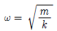
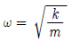
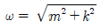
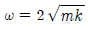
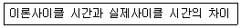
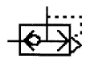
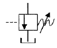

설비보전기사(구) (2006-09-10 기출문제)
1과목: 설비 진단 및 계측
1. 설비진단 기법과 응용 예를 설명한 사항 중 잘못 연결된 것은?
- 진동법 - 블로우, 팬 등의 밸런싱 진단
- 오일 분석법 - 베어링의 오일 휩(oil whip) 진단
- 응력법 - 설비 구조물의 응력 분포도 검사
- 열화상법 - 전기, 전자 부품의 이상발견
(정답률: 73%)

2. 어떤 물체가 기준 위치에 대해 반복운동 하는 것을 진동한다고 한다. 다음 진동의 종류와 그에 대한 설명이 잘못 연결된 것은?
- 자유진동 - 외란이 가해진 후에 계가 스스로 진동을 하고 있는 경우이다.
- 비감쇠 진동 - 대부분의 물리계에서 감쇠의 양이 매우 적어 공학적으로 감쇠를 무시한다.
- 선형 진동 - 진동의 진폭이 증가함에 따라 모든 진동계가 운동하는 방식이다.
- 규칙 진동 - 진동계가 작용하는 운동값이 항상 알려진 경우의 진동형태이다.
(정답률: 66%)
3. 진동의 크기를 표현하는 방법으로서 사용되는 용어들의 설명 중 맞지 않는 것은?
- 피크값 - 진동량 중 절대값의 최대값이다.
- 실효값 - 정현파의 경우 피크값의 1/√2배이다.
- 평균값 - 진동 에너지를 표현하는 것에 적합한 값이다.
- 양진폭 - 전진폭이라고도 하며 양의 최대값에서 부의 최대값 까지의 값이다.
(정답률: 59%)
4. 진동전달 경로차단에서 사용되는 일반적인 방법에 대한 설명 중 옳은 것은?
- 스프링형 진동 차단기는 강성이 충분히 높아야 한다.
- 스프링형 진동 차단기에 사용하는 스프링은 고유 진동수가 가능한 높아야 한다.
- 2단계 진동제어는 저주파 진동제어에는 역효과를 줄 수 있다.
- 진동체에 질량을 가하여 고유 진동수를 높이면 효과적이다.
(정답률: 65%)
5. 설비보전에서 온도 측정 및 경향관리는 설비결함을 조기에 파악할 수 있는 매우 중요한 요소기술 중 하나이다. 온도를 측정할 수 있는 센서 종류에 속하지 않는 것은?
- 써머커플(Thermocouple) 센서
- RTD 센서
- 적외선 (InfraRed) 센서
- 응력 (Strain Gauge) 센서
(정답률: 79%)
6. 전류, 전압 및 전기저항을 하나의 관계로 표현하여 정리한 것이 오옴의법칙(Ohm's Law) 이다. 다음 수식 중 오옴의 법칙으로 맞는 것은?
- 전류(I) = 전압(E) + 저항(R)
- 전압(E) = 전류(I) x 저항(R)
- 저항(R) = 전압(E) x 전류(I)
- 전압(E) = 전류(I) / 저항(R)
(정답률: 85%)
7. 다음 중 시스템을 외부 힘에 의해서 평형위치로부터 움직였다가 그 외부 힘을 끊었을 때 시스템이 자유진동을 하는 진동수를 무엇이라 하는가?
- 감쇠진동수
- 단순진동수
- 댐핑
- 고유진동수
(정답률: 72%)
8. 다음 중 음파의 종류에서 음원에서 모든 방향으로 동일한 에너지를 방출할 때 발생하는 파는?
- 평면파
- 구면파
- 발산파
- 진행파
(정답률: 76%)
9. 다음 중 인간의 청감에 대한 보정을 실시하여 소리의 크기 레벨에 근사한 값으로 측정할 수 있도록 한 측정기는?
- 녹음기
- 소음기
- 기록계
- 주파수 분석기
(정답률: 78%)
10. 다음 중 설비측면 데이터에 의한 신뢰성이 아닌 것은?
- 설비의 대형화, 다양화에 따른 오감 점검 불가능
- 설비의 대형화, 다양화에 따른 고장손실 증대
- 설비의 신뢰성 설계를 위한 데이터의 필요성
- 고장의 미연 방지 및 확대 방지
(정답률: 49%)
11. 다음 중 진동센서가 아닌 것은?
- 변위센서
- 속도센서
- 가속도센서
- 근접센서
(정답률: 74%)
12. 단순팽창형 소음기에 대한 설명이다. 틀린 것은?
- 평창형 소음기는 급격한 관경확대로 유속을 낮추어 소음을 감소시키는 소음기이다.
- 팽창형 소음기는 단면 불연속부에서 음에너지가 반사되어 소음을 감소시키는 구조이다.
- 감음주파수는 팽창부의 길이에 따라 결정되며 팽창부의 길이를 파장의 1/4배로 하는 것이 좋다.
- 최대 투과손실(TL)이 발생되는 주파수의 짝수 배에서는 최대가 되나 홀수 배에서는 0dB가 된다.
(정답률: 66%)
13. 포락선(Envelope)처리에 관한 설명으로 올바른 것은?
- 베어링의 결함 신호 등을 처리할 때 사용된다.
- 시간에 묻혀 잘 나타나지 않는 주기 신호의 존재 확인에 사용한다.
- 자기 상관함수와 상호상관 함수가 있다.
- 회전기기의 불균일 검출하기 위한 신호처리이다.
(정답률: 61%)
14. 열전대의 구성재료와 접합선이 잘못 나열된 것은?
- 기호종류(R) : (접합선 : 백금-로듐합금, -접합선 : 백금)
- 기호종류(T) : (+접합선 : 니켈합금, -접합선 : 동)
- 기호종류(E) : (+접합선 : 키넬-크롬합금, -접합선: 동-니켈합금)
- 기호종류(K) : (+접합선 : 니켈-크롬합금, -접합선 : 니켈 합금)
(정답률: 57%)
15. 측정대상 신호의 최대 주파수가 fmax이다. 나이퀴스트 샘플링 이론(Nyquist sampling theorem)에 의하면 에리에싱(Aliasing)의 영향을 제거하기 위한 샘플링(Sampling) 시간 ⊿t 은?
- △t ≤ sfmax
- △t ≥ sfmax
- △t ≤ 1/(2sfmax)
- △t ≥ 1/(2sfmax)
(정답률: 73%)
16. 다음 중 광학식 인코더의 내부 구성요소가 아닌 것은?
- 발광부
- 고정판
- 회전원판
- 리졸버
(정답률: 72%)
17. 질량을 m[kg] 강성을 k[N/m]라 할 때 고유진동수 ω[rad/sec]를 나타내는 것은?




(정답률: 74%)
18. 진폭을 나타내는 것이 아닌 것은?
- 변위
- 속도
- 가속도
- 위상
(정답률: 71%)
19. 발음원(發音原)이 이동할 때 그 진행 방향 쪽에서는 원래 발음원의 음보다 고음으로, 진행 반대쪽에서는 저음으로되는 현상은?
- 마스킹(masking) 효과
- 맥놀이 (beat) 효과
- 도플러 (doppier) 효과
- 호이겐스 (huyghens) 원리
(정답률: 65%)
20. 계측계에서 입력 신호인 측정량이 시간적으로 변동할 때 출력신호인 계측기 지시 특성을 나타내는 것은?
- 부특성
- 정특성
- 동특성
- 변환특성
(정답률: 75%)
2과목: 설비관리
21. 자본의 효율적 사용을 위해, 현재 사용 중인 낡은 기계의 계속 사용과 신기계의 대체라는 대안을 비교하여, 설비대체 여부를 결정하는 방법을 무엇이라 하는가?
- PERT/CPM
- MAPI
- QFD
- 6Sigma
(정답률: 67%)
22. 자주보전 7단계 중 “점검수첩에 의한 점검기능 교육이나 점검하기 쉬운 설비로의 개선”에 해당하는 단계는?
- 제1단계 : 초기 청소
- 제4단계 : 총 점검
- 제5단계 : 자주점검
- 제7단계 : 자주관리 철저
(정답률: 55%)
23. 설비관리에 대한 설명 중 관계가 가장 먼 것은?
- 사용설비의 보전도 유지를 포함한 생산보전 활동
- 설비 자산의 효율적 관리
- 끊임없는 설비의 자동화율 극대화
- 설비의 설계와 연계되는 보전도 향상
(정답률: 71%)
24. 설비 배치의 궁극적인 목표는 생산시스템의 효율 극대화이다. 이를 달성하기 위한 설비 배치 방법 설명 중 틀린것은?
- 자재흐름 만을 최우선으로 고려하여 자재창고를 가장 좋은 장소에 배치한다.
- 생산시스템 내의 인적 물적 이동을 최소화 한다.
- 작업 특성을 고려한 설비배치가 되어야 한다.
- 전체 가용 공간 및 작업 흐름에 따른 종합적인 계획이 필요하다.
(정답률: 74%)
25. 설비의 효율성을 결정짓는 하나의 속성으로서 “시스템이 어떤 특정 환경과 운전조건하에서 어느 주어진 시간동안 명시된 특정기능을 성공적으로 수행 할 수 있는 확률”을 무엇이라고 하는가?
- 고장도
- 시스템도
- 신뢰도
- 보전도
(정답률: 72%)
26. 다음 중 설비관리 조직의 개념이 아닌 것은?
- 설비투자를 합리적으로 할 수 있다.
- 설비관리의 목적을 달성하기 위한 수단이다.
- 설비관리의 목적을 달성하는데 지장이 없는 한 될수록 단순해야 한다.
- 구성원을 능률적으로 조절할 수 있어야 한다.
(정답률: 59%)
27. 설비보전의 직접기능 중 고장발생 후에 실시되는 제작, 분해, 조립, 추가공 등을 하는 것을 무엇이라고 하는가?
- 사후 수리
- 예방수리
- 예방보전검사
- 일상보전
(정답률: 71%)
28. 다음 중 예방보전과 효과가 아닌 것은?
- 설비의 정확한 상태 파악
- 검사방법과 측정방법의 표준
- 대수리의 감소
- 긴급용 예비기기의 필요성 감소와 자본투자의 감소
(정답률: 53%)
29. 뜻이 있는 기호법의 대표적인 것으로서 항목의 첫 글자라든가, 그 밖의 문자를 기호로 하는 방법은 다음 중 어느 것 인가?
- 순번식 기호법
- 세구분식 기호법
- 기억식 기호법
- 삼진분류 기호법
(정답률: 69%)
30. 예방보전 검사제도의 흐름이 올바르게 된 것은?
- PM검사 표준 설정 → PM검사 계획 → PM검사 실시 → 수리 요구 → 수리 검수 → 설비보전 기록
- PM검사 계획 → PM검사 표준 설정 → PM검사 실시 → 수리 요구 → 수리 검수→ 설비 보전 기록
- 수리 요구 → PM검사 계획 → PM검사 표준설정 → PM검사 실시 → 수리 검수 → 설비 보전 기록
- 수리 요구 → 수리 검수→ PM검사 계획 → PM검사 표준 설정 → PM검사 실시 → 설비 보전 기록
(정답률: 57%)
31. 품질 개선 활동을 위하여 불량품, 결점, 크레임, 사고 건 수 등을 그 현상이나 원인 별로 데이터를 내고 수량이 많은 순서로 나열하여 그 크기를 막대그래프로 나타난 그래프 분석법은?
- 히스토그램
- 관리도
- 파레토도
- 산점도
(정답률: 60%)
32. 설비종합 효율에서 성능가동률에 해당하는 로스(loss)는?
- 고장 로스
- 준비, 교체, 조정 로스
- 속도 저하 로스
- 수율 저하 로스
(정답률: 44%)
33. 항공기 조립산업이나, 선박 제조업, 건축업 등에 널리 이용되는 설비 배치 방법은?
- 제품별 배치
- 공정별 배치
- GT 배치
- 고정 위치 배치
(정답률: 60%)
34. 계량단위 종류에 속하지 않는 것은?(오류 신고가 접수된 문제입니다. 반드시 정답과 해설을 확인하시기 바랍니다.)
- 기본 단위
- 유도 단위
- 특수 단위
- 보조 계량단위
(정답률: 48%)
35. 설비의 경제성 평가 방법이 아닌 것은?
- 연환지수법
- 자금 회수기간법
- 투자 수익률법(신 MAPI법)
- 원가비교법(구 MAPI법)
(정답률: 59%)
36. 열관리의 효율적 운영에 맞지 않는 것은?
- 열관리의 효율을 높이기 위해서는 일부 관계자와 공장 간부의 전담반에 의한 집중 관리가 중요하다.
- 설비의 열사용 기준을 정해 열효율 향상을 도모해야 한다.
- 열설비는 가동률 향상이 제일 중요하다.
- 연료는 가격이 저렴하고 쉽게 확보 할 수 있어야 한다.
(정답률: 63%)
37. 프로세스형 설비의 로스는 9대 로스로 구분된다. 그중 다음은 어떤 로스를 정의한 것인가?

- 계획정지로스
- Shut down 로스
- 순간정지로스
- 속도저하로스
(정답률: 73%)
38. 설비의 공사관리로 PERT 기법의 내용 중에서 틀린 것은?
- 전형적 시간 (Most Likely Time)은 공사를 완료하는 최빈치를 나타낸다.
- 낙관적시간(Optimistic Time)은 공사를 완료할 수 있는 최단시간이다.
- 비관적시간(Pessimistic Time)은 공사를 완료 할 수 있는 최장 시간이다.
- 위급경로(Critical Path)는 공사를 완료하는데 가장 시간이 적게 걸리는 경로를 말한다.
(정답률: 67%)
39. 치공구를 설계하기 위한 기본적 방법으로 틀린 것은?
- 치구 부착구 구성 부품의 표준화를 적극적으로 고려 할 것
- 구조는 가능한 한 복작ㅂ하고 균형이 잡힌 형상을 갖고 있을 것
- 피공작물의 부착과 해체가 용이 하며, 공작작업을 하기 쉬운 구조일 것
- 작업 시에 안전성, 신뢰성이 높다는 감각을 줄 수 있는 구조, 형상 일 것.
(정답률: 76%)
40. TPM 관리를 설명한 내용으로 거리가 먼 것은?
- Output 지향
- 로스(Loss) 측정
- 사전활동
- 원인추구
(정답률: 67%)
3과목: 기계일반 및 기계보전
41. 줄 작업 시 줄작업 용도에 따른 작업방법이 아닌 것은?
- 직진법
- 후퇴법
- 사진법
- 병진법
(정답률: 62%)
42. 배관이음 중 신축 이음법이 아닌 것은?
- 루프형 이음
- 파형관 이음
- 미끄럼형 이음
- 유니온형 이음
(정답률: 54%)
43. 송풍기 기동 후의 점검 사항으로 잘못 된 것은?
- 베어링의 온도가 급상승하는지 유무 점검
- 임펠러의 이상 유무 점검
- 윤활유의 적정 여부 점검
- 미끄럼베어링의 오일링 회전의 정상 유무 점검
(정답률: 64%)
44. 전동기의 과열원인이 아닌 것은?
- 공진
- 과부하 운전
- 빈번한 기동, 정지
- 베어링부에서의 발열
(정답률: 66%)
45. 나사의 종류를 표시하는 기호가 올바르게 표기된 것은?
- 유니파이 보통나사 : UNF
- 관용평행나사 : PT
- 30도 사다리꼴 나사 : TM
- 후강 전선과 나사 : CTC
(정답률: 49%)
46. 공작기계의 구비조건에 대한 설명으로 틀린 것은?
- 높은 정밀도를 가질 것
- 가공 능력이 클 것
- 내구력이 클 것
- 강성이 없을 것
(정답률: 73%)
47. 다음 중 축이음 핀의 빠짐 방지나 볼트, 너트의 풀림방지로 쓰이는 것은?
- 분할핀
- 평행핀
- 테이퍼 핀
- 코터
(정답률: 65%)
48. 강을 담글질 하면 단단해지나 취약해 지므로 사용목적에 알맞도록 A1 변태점 이하의 적당한 온도로 재가열하여 인성을 증가시키고 경도를 감소시키는 것을 무엇이라 하는가?
- 풀림
- 불림
- 뜨임
- 침탄
(정답률: 65%)
49. 액상 가스켓의 사용방법 중 잘못된 것은?
- 바른 직 후 접합해서는 안된다.
- 접합면에 수분 등 오물을 제거한다.
- 얇고 균일하게 칠한다.
- 사용온도 범위는 대체적으로 40~400℃이다.
(정답률: 67%)
50. 압축기에서 발생한 고온의 압축공기를 그대로 사용하면 패킹의 열화를 촉진하거나 수분 등이 발생하여 기기에 나쁜 영향을 주므로 이 압축공기를 약 40℃ 이하까지 냉각하는 기기는?
- 공기 건조기
- 세정기
- 후부 냉각기
- 방열기
(정답률: 69%)
51. MOV 운전 중 토크 스위치 동작시기가 틀린 것은?
- 디스크 시트 또는 백시팅 시
- 스템 고착 시
- 밸브 스타핑 박스 밀봉부를 과도하게 조였을 때
- 밸브스템 회전감지
(정답률: 42%)
52. 제어밸브 포지셔너를 점검하고자 한다. 내용이 잘못된 것은?
- Nozzle Flapper 부위에서 VENT가 발생되면 Nozzle Flapper를 교체한다.
- Feedback Bar와 캠 사이에 링크된 부분이 원활한지 점검한다.
- 포지셔너 내부 캠 위치를 변경 설치하면 밸브의 제어기능을 변경할 수 있다.
- ZERO와 RANGE Adjustment를 조정 후 반드시 잠금장치를 조여서 Drift를 방지한다.
(정답률: 59%)
53. 구름베어링 6206 P6을 설명한 것 중에서 틀린 것은?
- 6 - 베어링 형식
- 2 - 사용한 윤활유의 점도
- 06 - 베어링 안지름 번호
- P6 - 등급번호
(정답률: 65%)
54. 직성운동을 회전운동으로 변환하거나 회전운동을 직선운동으로 변화시키는데 사용되는 기어는?
- 스퍼 기어
- 헬리컬 기어
- 베벨 기어
- 랙과 피니언
(정답률: 56%)
55. 다음 중 용접의 장점이 아닌 것은?
- 구께의 제한이 없다.
- 기밀성, 수밀성, 유밀성이 우수하다.
- 재질의 변형 및 잔류 응력이 존재하지 않는다.
- 공정수가 감소되고 시간이 단축된다.
(정답률: 70%)
56. 측정자의 직선 또는 원호운동을 기계적으로 확대하여 그 움직임을 지침의 회전 변위로 변환시켜 눈금으로 읽을 수 있는 길이 측정기는?
- 다이얼 게이지
- 마이크로 메터
- 하이트 게이지
- 버니어 캘리퍼스
(정답률: 68%)
57. 송풍기의 베어링이 이상발열로 온고가 높아지는 원인으로 해당되지 않는 것은?
- V-Belt의 장력이 너무 센 경우
- 윤활유의 양이 너무 많거나 적은 경우
- V-Belt가 마모가 된 경우
- 오일 실을 잘못 조립하였을 경우
(정답률: 60%)
58. 다음 축 고장의 원인 중에서 설계불량에 포함되지 않는 것은?
- 재질 불량
- 자연 열화
- 치수강도 부족
- 형상구조불량
(정답률: 70%)
59. 게이트 밸브라고도 하며 흐름에 대해 수직으로 간막이 해서 보통 전개, 전폐로 사용하는 밸브는?
- 글로우브 밸브
- 슬루우스 밸브
- 앵글 밸브
- 체크밸브
(정답률: 52%)
60. 웜기어 감속기의 경우 웜휠의 이닿기 면을 웜의 중심에서 출구 쪽으로 약간 어긋나게 하는 이유로 틀린 것은?
- 감속비를 높이기 위하여
- 윤활유의 공급이 잘 되게 하기 위하여
- 접촉각을 조정하기 위하여
- 백래쉬를 없애기 위하여
(정답률: 57%)
4과목: 윤활관리
61. 윤활 관리는 일반적으로 윤활제 구입비용의 절약을 목적으로 생각하기 쉽다. 그러나 최근에는 기계나 설비의 완전한 운전을 보장하는 측면에서 더 중요하게 취급되고 있다. 이러한 측면에서 윤활관리는 보전의 분류상 어디에 해당하는가?
- 보전예방
- 사후예방
- 개량보전
- 예방보전
(정답률: 57%)
62. 라인적 조직관계가 있는 경우, 윤활기술자의 직무로 볼 수 없는 것은?
- 급유장치의 보수와 설치
- 사용 윤활유의 선정 및 품질관리
- 윤활관계의 개선 시험
- 구매경비의 절약
(정답률: 60%)
63. 미끄럼 베어링의 그리스 윤활을 위한 그리스의 선정 기준으로서 고려해야 할 사항이 아닌 것은?
- 사용 온도에 적당한 주도를 가진 그리스를 선정한다.
- 일반적으로 2m/sec 이하에 적합하다.
- 급유방법으로서 급유하기에 용이한 주도의 그리스를 선택한다.
- 저하중인 경우 EP 급 그리스를 반드시 선정한다.
(정답률: 64%)
64. 다음 중 광물계 유압 작동유가 아닌 것은?
- 합성 인산에스테르계
- 첨가 터빈유
- 클린 유압작동유
- 일반 유압작동유
(정답률: 57%)
65. 윤활관리 효과 중에서 옳지 않는 것은?
- 윤활유 사용 소비량 증가
- 폐유로 인한 환경오염 방지
- 기계의 효율향상 및 정밀도 유지
- 기계고장으로 인한 생산정지 중의 파급 손실예방
(정답률: 72%)
66. 카본 및 슬러지(Sludge)가 압축기에 미치는 영향 중 옳은 것은?
- 윤활방해 → 마모 증대 및 온도 상승 → 동력비 증가
- 밸브 작동이상 → 재압축 현상 → 압축효율 향상
- 오일 필터 막힘 → 오일 청정성 불량 → 윤활작용증대
- 세퍼레이터 작동 불량 → 유수 분리 양호 → 오일 청정도 우수
(정답률: 61%)
67. 다음 중 윤활관리의 목적과 관계가 없는 것은?
- 설비의 수명 연장
- 윤활비용 감소
- 설비 가동율 증대
- 고장 도수율 증대
(정답률: 69%)
68. 기어의 성능을 증대시키고 윤활유 성능과 기어의 사용 수명에 영향을 미치는 요인과 거리가 먼 것은?
- 윤활유의 품질
- 윤활유의 점도
- 미끄럼과 구름 속도
- NLG#2 그리스
(정답률: 69%)
69. 윤활유의 시험방법에 대한 설명 중 타당하지 않는 것은?
- 윤활유의 용존수분가(Dissolved water in oil)는 Karl Fisher 방법으로 측정한다.
- 전산가(TAN)가 낮으면 오일의 수명이 다했으므로 오일을 교체한다.
- 오일 속 수분가 측정법 중 증류법은 오일을 가열하여 끓임에 따라서 증발하는 물의 양을 측정한다.
- 오일속의 수분은 정전이온법, 진공탈수법, 원심분리법 등으로 제거할 수 있다.
(정답률: 54%)
70. 다음 중 그리스의 주도를 측정하는 방법이 아닌 것은?
- 혼화 주도
- 불혼화 주도
- 고형주도
- 증주 주도
(정답률: 57%)
71. 기어 윤활에서 기어의 손상에 대한 설명으로 적당한 것은?
- 리징(ridging) : 외관이 미세한 홈과 퇴적상이 마찰 방향과 평행으로 거의 등간격으로 된 것이 특징이다.
- 리플링(rippling) : 국부적으로 금속 접촉이 일어나 용융 되어 띁겨가는 현상으로 극압성 윤활제가 좋다.
- 스폴링(spalling) : 높은 응력이 반복 작용된 결과로 박리현상이 없으며 윤활유의 성상과는 무관하다.
- 피팅(potting) : 고속 고하중 기어에는 이면의 유막이 파단되어 국부적으로 금속 접촉이 일어나는 것이다.
(정답률: 52%)
72. 그리스 충전방법에 관한 내용으로 틀린 것은?
- 저속 베어링일수록 그리스의 충전량은 적게 한다.
- 나트륨 그리스와 리튬그리스의 혼합 충전은 피한다.
- 베어링의 하중이 클수록 최소 적정량으로 관리한다.
- 일반적으로 베어링 하우징의 공간에 1/3 내지 1/2을 충전한다.
(정답률: 49%)
73. 윤활관리를 실시할 경우 자원절약 측면에서 볼 때 거리가 먼 것은?
- 윤활유 사용 소비량의 절약
- 마찰 감소에서 오는 에너지 소비 절감
- 폐자원 이용 등의 효과
- 노동의 절약
(정답률: 47%)
74. 미끄럼베어링과 구름베어링의 비교 설명으로 맞지 않는 것은?
- 미끄럼베어링은 구름베어링에 비하여 추력 하중을 용이하게 받는다.
- 미끄럼베어링은 구름베어링에 비하여 유막에 의한 감쇠력이 우수하다.
- 미끄럼베어링은 구름베어링에 비하여 특별한 고속 이외는 정숙하다.
- 미끄럼베어링은 구름베어링에 비하여 고속회전이 가능하다.
(정답률: 38%)
75. 다음중 액상의 윤활유로서 갖추어야 할 성질이 아닌 것은?
- 가능한 한 화학적으로 활성이며, 청정 균질한 것
- 사용상태에서 충분한 점도를 가질 것
- 한계 윤활상태에서 견디어 낼 수 있는 유성이 있을 것
- 산화나 여에 대한 안전성이 높을 것
(정답률: 62%)
76. 다음 급유방법 중에 순환급유법에 속하지 않는 것은?
- 비말 급유법
- 유욕 급유법
- 적하 급유법
- 유륜식 급유법
(정답률: 51%)
77. 다음 중 윤활유의 유화를 촉진하는 요인이 아닌 것은?
- 기름의 산화가 상당히 일어났을 때
- 수분과의 접촉이 많을 경우
- 윤활유가 열화하여 오염이 증가되어 고점도가 될 경우
- 점도가 저하 되었을 경우
(정답률: 48%)
78. 윤활유의 분석결과 입자오염도는 증가하였으나 그다지 마모분은 증가하지 않았다. 고장의 원인으로 생각되는 것은?
- 점도의 저하
- 에어 브리더의 파손
- 펌프의 마모
- 산가의 증가
(정답률: 47%)
79. 점도지수(Viscosity Index)는 온도의 변화에 따른 윤활유의 점도 변화를 나타내는 수치이다. 점도지수의 정의로서 맞는 것은?(단, U : 시료유의 40℃ 때의 점도, L : 100℃일 때의 시료유와 같은 점도를 가진 VI=0의 표준유의 40℃ 때의 점도, H : 100℃ 일 때의 시료유와 같은 점도를 가진 VI=100의 표준유의 40℃ 때의 점도를 각각 나타낸다.)
- 점도 지수 = (L-U) x (L-H) x 100
- 점도 지수 = (L+H) x (L+U) x 100
- 점도 지수 = [(L-U)/(L-H)] x 100
- 점도 지수 = [(L-H)/(L-U)] x 100
(정답률: 49%)
80. 육안으로 색의 변화, 수분의 혼입 등을 경험적으로 판단하는 방법은?
- 현장적 판정법
- 시간, 기간, 거리수에 의한 판정법
- 정기적 분석에 의한 판정법
- 정밀 시험 분석법
(정답률: 67%)
5과목: 공유압 및 자동화
81. 다음 압축공기 청정화기기의 성명 중 옳지 않은 것은?
- 후부냉각기(after cooler)는 액추에이터의 후부에 설치한다.
- 압축공기가 현저하게 오염되어 있을 때에는 오일 미스트 분리기를 사용한다.
- 제습기에는 냉동식과 흡수식 및 흡착식이 있다.
- 드레인 자동 배출 방법에는 플로트식과 차압식이 있다.
(정답률: 57%)
82. 다음 중 유압의 특징이 아닌 것은?
- 작동체의 속도를 무단 변속 할 수 있다.
- 공압에 비해 큰 힘을 낼 수 있다.
- 정확한 위치제어가 가능하다
- 온도와 점도에 영향을 받지 않는다.
(정답률: 70%)
83. 유압 펌프의 1회전당 토출량을 나타내는 단위는?
- cc/min
- cc/rev
- ℓ/min
- ℓ/rpm
(정답률: 53%)
84. 실린더 고정방법 중 :형 고정 방식인 것은?
- 풋(Foot)형
- 볼(Ball)형
- 클레비스(Clevis)형
- 트라니언(Trunnion)형
(정답률: 56%)
85. 토크가 증가하면 가장 급격히 속도가 감소하는 전동기는?
- 직류분권 전동기
- 직류복권 전동기
- 직류직권 전동기
- 3상유도 전동기
(정답률: 46%)
86. 다음 중 압력의 단위가 아닌 것은?
- N/m2
- kgf/cm2
- dyne/cm
- psi
(정답률: 57%)
87. 다음 중 입력이 Ⅹ1=1이고 Ⅹ2=0일 때 또는 Ⅹ1=0이고 Ⅹ2=1 인 경우에만 출력이 나오는 공압 회로는?
- NOT 회로
- NOR 회로
- XOR 회로
- NAND 회로
(정답률: 49%)
88. 아래 기호의 명칭은 무엇인가?

- 셔틀밸브
- 2압 밸브
- 체크 밸브
- 급속배기 밸브
(정답률: 52%)
89. 자동화 시스템으로 구성된 설비의 가동률을 높이기 위해서는 예방보전이 절실히 요구된다. 예방보전을 위한 현장 작업자는 보전담당자의 역할분담으로 가장 적합한 것은?
- 현장작업자는 일상점당장자는 이상발견 및 보고, 청소급유를 충실히 하여야 한다.
- 현장작업자는 정기점검 팀 수리, 개선보전활동을 하고, 보전담당자는 일상점검, 이상발견 및 보고, 청소급유를 충실히 하여야 한다.
- 현장작업자는 일상점검, 이상발견 및 보고, 청소급유를 충실히 하고, 보전담당자는 정기점검 및 수리, 개선보전 활동을 하여야 한다.
- 현장 작업자는 개선보전활동, 정기점검 및 수리, 청소급유를 충실히 하고 보전담당자는 이상발견 및 보고, 일상점검을 하여야 한다.
(정답률: 65%)
90. 다음 중 오리피스(orifice)에 대한 설명으로 맞는 것은?
- 길이가 단면치수에 비해 비교적 긴 교축이다.
- 교축부를 통과하는 유체는 온도의 영향을 거의 받지 않는다.
- 교축부를 통과하는 유체는 온도에 따라 크게 영향을 받는다.
- 교축부를 통과하는 유체는 점도에 따라 크게 영향을 받는다.
(정답률: 52%)
91. 다음의 기호는 무엇인가.

- 시퀸스 밸브
- 카운터밸런스 밸브
- 언로드 밸브
- 리듀샤 벨브
(정답률: 47%)
92. 전기회로에서 수동 소자가 아닌 것은?
- 저항
- 자기 인덕턴스
- 캐패시턴스
- 정전압원
(정답률: 52%)
93. 다음 중 공기압 발생장치의 원리가 다른 것은?
- 베인 압축기
- 카운터밸런스 밸브
- 터보 압축기
- 피스톤 압축기
(정답률: 37%)
94. 시스템의 특성을 나타내는 라플라스변환식에서 입력과 출력의 비례관계를 나타내는 것은?
- 전달함수
- 도함수
- 피드 백
- 블리드오프
(정답률: 48%)
95. 중앙처리장치의 기능을 하나 혹은 몇 개의 반도체 칩에 집적한 것은?
- 제어용 컴퓨터
- 마이크로 컴퓨터
- 마이크로 프로세서
- 디지털 제어
(정답률: 65%)
96. 다음 주파수 응답의 도시법 중 보드선도에 대한 설명으로 맞는 것은?
- 각 주파수가 0 에서부터 ∞ 까지 주파수 전달함수의 궤적이다.
- 주파수 전달 함수에 대하여 자연로그를 취한 후 10배 한 값으로 정한다.
- 일반적으로 이득을 가로 축, 각 주파수를 세로축에 표시한다.
- 각 주파수의 값에 대한 주파수 전달함수의 크기 및 위상각의 곡선이다.
(정답률: 50%)
97. 액추에이터의 운동속도를 제어하는 방식 중에서 액추에이터에서 유출되는 유량을 제어하는 속도를 조절하는 방식은?
- 블리드 오프(bleed-off) 방식
- 언로딩(unloading) 방식
- 미터-인(meter-in) 방식
- 미터-아웃(meter-out) 방식
(정답률: 56%)
98. 유압시스템에서 축압기(Accumulator)의 사용 목적으로 적합하지 않는 것은?
- 에너지 보조원으로 사용하는 경우
- 충격 압력을 흡수하는 경우
- 맥동 흡수용으로 사용하는 경우
- 압력 증대용으로 사용하는 경우
(정답률: 59%)
99. 제어 동작이 출력 상태와 무관하게 이루어지는 제어시스템으로써 제어 장치로 구성된 각 기기들은 자기에게 정해진 작업만을 수행하며 외란에 의한 오차에 대처할 능력이 없는 제어 방식은?
- 오픈 루프 제어(Open Loop Control)
- 크로즈 루프 제어(Closed Loop Control)
- 아나로그 제어(Analog Control)
- 디지털 제어(Digital Control)
(정답률: 55%)
100. 다음은 시퀀스제어에 관한 설명이다. 클린 것은?
- 피드백 신호가 반드시 있어야 한다.
- 입력 신호가 필요하다
- 순차적인 제어 출력을 발생한다.
- 프로그램 제어의 한 형태이다.
(정답률: 60%)
오일 휩은 베어링의 회전 중 축과 베어링 사이에 오일이 끼어서 생기는 현상으로, 이는 베어링의 마모와 고장으로 이어질 수 있습니다. 따라서 오일 분석법을 통해 오일의 상태를 파악하고, 진동법을 통해 베어링의 상태를 진단하여 오일 휩을 예방하고, 설비의 안전성과 수명을 높일 수 있습니다.